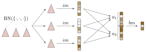

It is recommended to read the Motivation section first to understand the crucial ideas behind hierarchical multiple instance learning.
Nodes
Mill.jl enables representation of arbitrarily complex tree-like hierarchies and appropriate models for these hierarchies. It defines two core abstract types:
AbstractNodewhich stores data on any level of abstraction and its subtypes can be further nestedAbstractModelNodewhich helps to define a corresponding model. For each specific implementation ofAbstractNodewe have one or more specificAbstractModelNode(s) for processing it.
Below we will go through implementation of ArrayNode, BagNode and ProductNode together with their corresponding models. It is possible to define data and model nodes for more complex behaviors (see Custom Nodes), however, these three core types are already sufficient for a lot of tasks, for instance, representing any JSON document and using appropriate models to convert it to a vector represention or classify it (see TODO).
ArrayNode and ArrayModel
ArrayNode thinly wraps an array of features (specifically any subtype of AbstractArray):
julia> X = Float32.([1 2 3 4; 5 6 7 8])
2×4 Array{Float32,2}:
1.0 2.0 3.0 4.0
5.0 6.0 7.0 8.0
julia> AN = ArrayNode(X)
2×4 ArrayNode{Array{Float32,2},Nothing}:
1.0 2.0 3.0 4.0
5.0 6.0 7.0 8.0Similarly, ArrayModel wraps any function performing operation over this array. In example below, we wrap a feature matrix X and a Dense model from Flux.jl:
using Flux: Densejulia> f = Dense(2, 3)
Dense(2, 3)
julia> AM = ArrayModel(f)
ArrayModel(Dense(2, 3))We can apply the model now with AM(AN) to get another ArrayNode and verify that the feedforward layer f is really applied:
julia> AM(AN)
3×4 ArrayNode{Array{Float32,2},Nothing}:
3.4976807 3.4169364 3.3361924 3.255448
-0.14323461 -0.260217 -0.37719944 -0.4941818
2.0586066 2.3713849 2.6841633 2.9969416
julia> f(X) == AM(AN).data
trueA convenient property of all Mill.jl models is that after applying them to a corresponding data node we always obtain an ArrayNode as output regardless of the type and complexity of the model. This becomes important later.
The most common interpretation of the data inside ArrayNodes is that each column contains features of one sample and therefore the node AN carries size(AN.data, 2) samples. In this sense, ArrayNodes wrap the standard machine learning problem, where each sample is represented with a vector, a matrix or a more general tensor of features. Alternatively, one can obtain a number of samples of any AbstractNode with nobs function from StatsBase.jl package:
julia> using StatsBase: nobs
julia> nobs(AN)
4BagNode
BagNode is represents the standard multiple instance learning problem, that is, each sample is a bag containing an arbitrary number of instances. In the simplest case, each instance is a vector:
julia> BN = BagNode(AN, [1:1, 2:3, 4:4])
BagNode with 3 obs
└── ArrayNode(2×4 Array with Float32 elements) with 4 obswhere for simplicity we used AN from the previous example. Each BagNode carries data and bags fields:
julia> BN.data
2×4 ArrayNode{Array{Float32,2},Nothing}:
1.0 2.0 3.0 4.0
5.0 6.0 7.0 8.0
julia> BN.bags
AlignedBags(UnitRange{Int64}[1:1, 2:3, 4:4])Here, data can be an arbitrary AbstractNode storing representation of instances (ArrayNode in this case) and bags field contains information, which instances belong to which bag. In this specific case bn stores three bags (samples). The first one consists of a single instance {[1.0, 5.0]} (first column of AN), the second one of two instances {[2.0, 6.0], [3.0, 7.0]}, and the last one of a single instance {[4.0, 8.0]}. We can see that we deal with three top-level samples (bags):
julia> nobs(BN)
3whereas they are formed using four instances:
julia> nobs(AN)
4In Mill.jl, there two ways to store indices of the bag's instances:
* in `AlignedBags` structure, which accepts a `Vector` of `UnitRange`s and requires all bag's instances stored continuously:julia> AlignedBags([1:3, 4:4, 5:6])
AlignedBags(UnitRange{Int64}[1:3, 4:4, 5:6])* and in `ScatteredBags` structure, which accepts a `Vector` of `Vectors`s storing not necessarily contiguous indices:julia> ScatteredBags([[3, 2, 1], [4], [6, 5]])
ScatteredBags([[3, 2, 1], [4], [6, 5]])The two examples above are semantically equivalent, as bags are unordered collections of instances. An empty bag with no instances is in AlignedBags specified as empty range 0:-1 and in ScatteredBags as an empty vector []. The constructor of BagNode accepts directly one of these two structures and tries to automagically decide the better type in other cases.
BagModel
Each BagNode is processed by a BagModel, which contains two (sub)models and an aggregation operator:
julia> im = ArrayModel(Dense(2, 3))
ArrayModel(Dense(2, 3))
julia> a = SegmentedMax(3)
Aggregation{Float32}:
SegmentedMax(ψ = Float32[0.0, 0.0, 0.0])
julia> bm = ArrayModel(Dense(4, 4))
ArrayModel(Dense(4, 4))
julia> BM = BagModel(im, a, bm)
BagModel … ↦ ⟨SegmentedMax(3)⟩ ↦ ArrayModel(Dense(4, 4))
└── ArrayModel(Dense(2, 3))The first network submodel (called instance model im) is responsible for converting the instance representation to a vector form:
julia> y = im(AN)
3×4 ArrayNode{Array{Float32,2},Nothing}:
-1.8027043 -1.9943779 -2.1860514 -2.3777251
2.0313349 1.6108505 1.190366 0.7698817
4.4281187 6.089026 7.7499332 9.41084Note that because of the property mentioned above, the output of instance model im will always be an ArrayNode wrapping a matrix. We get four columns, one for each instance. This result is then used in Aggregation (a) which takes vector representation of all instances and produces a single vector per bag:
julia> y = a(y, BN.bags)
4×3 ArrayNode{Array{Float32,2},Nothing}:
-1.8027043 -1.9943779 -2.3777251
2.0313349 1.6108505 0.7698817
4.4281187 7.7499332 9.41084
0.6931472 1.0986123 0.6931472To read more about aggregation operators and find out why there are four rows instead of three after applying the operator, see Bag aggregation section.
Finally, y is then passed to a feed forward model (called bag model bm) producing the final output per bag. In our example we therefore get a matrix with three columns:
julia> y = bm(y)
4×3 ArrayNode{Array{Float32,2},Nothing}:
-2.7524579 -4.0476546 -4.976086
-2.9004285 -3.597368 -3.3559873
-1.7252537 -3.975099 -5.759051
-3.7051883 -6.0850596 -6.606268However, the best way to use a bag model node is to simply apply it, which results into the same output:
julia> BM(BN) == y
trueThe whole procedure is depicted in the following picture:

Three instances of the BagNode are represented by red subtrees are first mapped with instance model im, aggregated (aggregation operator here is a concatenation of two different operators $a_1$ and $a_2$), and the results of aggregation are transformed with bag model bm.
Another handy feature of Mill.jl models is that they are completely differentiable and therefore fit in the Flux.jl framework. Nodes for processing arrays and bags are sufficient to solve the classical Musk dataset problem.
ProductNodes and ProductModels
ProductNode can be thought of as a Cartesian Product or a Dictionary. It holds a Tuple or NamedTuple of nodes (not necessarily of the same type). For example, a ProductNode with a BagNode and ArrayNode as children would look like this:
julia> PN = ProductNode((a=ArrayNode(Float32.([1 2 3; 4 5 6])), b=BN))
ProductNode with 3 obs
├── a: ArrayNode(2×3 Array with Float32 elements) with 3 obs
└── b: BagNode with 3 obs
└── ArrayNode(2×4 Array with Float32 elements) with 4 obsAnalogically, the ProductModel contains a (Named)Tuple of (sub)models processing each of its children (stored in ms field standing for models), as well as one more (sub)model m:
julia> ms = (a=AM, b=BM)
(a = ArrayModel(Dense(2, 3)), b = BagModel … ↦ ⟨SegmentedMax(3)⟩ ↦ ArrayModel(Dense(4, 4)))
julia> m = ArrayModel(Dense(7, 2))
ArrayModel(Dense(7, 2))
julia> PM = ProductModel(ms, m)
ProductModel … ↦ ArrayModel(Dense(7, 2))
├── a: ArrayModel(Dense(2, 3))
└── b: BagModel … ↦ ⟨SegmentedMax(3)⟩ ↦ ArrayModel(Dense(4, 4))
└── ArrayModel(Dense(2, 3))Again, since the library is based on the property that the output of each model is an ArrayNode, the product model applies models from ms to appropriate children and vertically concatenates the output, which is then processed by model m. An example of model processing the above sample would be:
julia> y = PM.m(vcat(PM[:a](PN[:a]), PM[:b](PN[:b])))
2×3 ArrayNode{Array{Float32,2},Nothing}:
1.8865296 1.452563 0.8274746
2.7423773 5.070291 6.571025which is equivalent to:
julia> PM(PN) == y
trueApplication of a product model (this time with four subtrees (keys)) can be visualized as follows:

In general, we recommend to use NamedTuples, because the key can be used for indexing both ProductNodes and ProductModels.